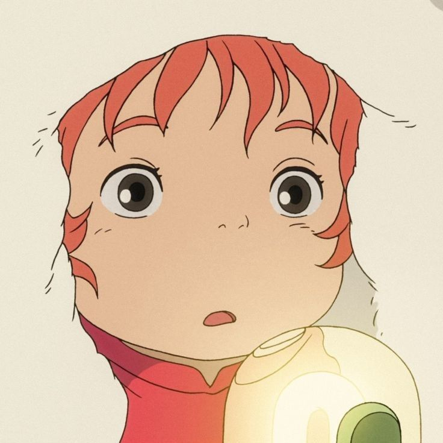

PREFACE
Everything that lives is designed to end. We are perpetually trapped in a never-ending spiral of life and death. Is this a curse, or some kind of punishment? I often think about the god who blessed us with this cryptic puzzle and wonder if we'll ever have the chance to kill him.

MIRA BELLE
arimdawoo
Chiara is a bike courier who works in a food takeaway
delivery service based in Paris, France.
She is easy-going and cheerful, and
hopes to open a takoyaki food truck someday.